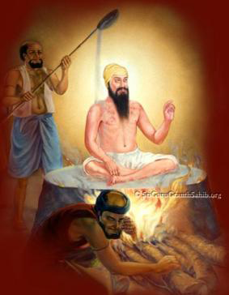

<center><body background="images1/khlihoij.png"width="1000"><TABLE width="1000" BORDER="0" cellpadding="0" cellspacing="0">
<tr><td colspan="2"><center></center>
<tr>
<td>
&nbsp;&nbsp;&nbsp;&nbsp;&nbsp;&nbsp;
<a href="images1/arjan.png" width="1000"> <center> </center>
</td>
<td>
<FONT COLOR="#741111"><FONT SIZE="5">
The Fifth Guru - Guru Arjan Dev ji (1581 - 1606)
</font>
<br>
<FONT COLOR="#741111"><FONT SIZE="4">
Name :Guru Arjan Dev ji <br>
Parents : Ram Das Ji & Bibi Bhani<br>
Born : April 15, 1563, Goindval<br>
Siblings :Prithi Chand and Mahadev<br>
Spouse : Mata Ganga<br>
Children :Guru Har Gobind<br>

Guruship : 1581 - 1606<br>
Joti Jot :May 30, 1606, Lahore<br>
Age :43 years<br>
Bani :2218 Shabads, 30 Raags
<br>
</td>
</tr>
<tr><td colspan="2">
<FONT COLOR="#741111"><FONT SIZE="4">
<br>
Guru Arjan Sahib, the youngest son of Guru Ramdas Sahib and Mata Bhani Ji was born at Goindwal Sahib on Vaisakh Vadi 7th, (19th Vaisakh) Samvat 1620 (April 15,1563). He learnt Gurmukhi script and Gurbani from Baba Budha ji. He was also given a suitable education in Persian, Hindi and Sanskrit languages. The child (Guru)Arjan Sahib often talked of God and loved to sing His songs. He had two elder brothers, Prithi Chand ji and Mahadev ji. The former proved to be the most selfish and the later mostly preferred utter silence. But (Guru) Arjan Sahib was sweet, humble and a perfect blend of devotion and sacrifice. He was hardly 18 years old when his father Guru Ramdas Sahib installed him as the Fifth Nanak. He was married to Mata Ganga ji and had a son (Guru) Hargobind Sahib. 

Guru Arjan Sahib completed the work on two sacred tanks (Sarowars) Santokhsar and Amritsar. He got the foundation stone of Harmandir Sahib, laid by a Muslim Saint Hazrat Mian Mir Ji of Lahore on 1st Magh, Vikrami Samvat 1644 (December 1588). After the completion of Sri Harmandir Sahib, Guru Sahib completed the construction of Santhokhsar. 

Guru Arjan Sahib founded the town of Tarn Taran Sahib near Goindwal Sahib and also created a large tank and Gurdwara there. A house for lepers was also built. He also laid the foundation stone of the town Kartarpur in Doaba region (near Jalandhar city). He constructed a Baoli in Dabbi-Bazar of Lahore. (Once Shah Jahan destroyed the Baoli and erected a mosque there. But later on Maharaja Ranjit Singh re-excavated the Baoli. Again, after the partition of India in 1947, it was demolished by the Musilm mob). Guru Sahib also established another town, Hargobindpur on the river Bias and sunk a big well for irrigation at Chheharta, a few miles away from Amritsar. 

Guru Arjan Sahib was very energetic and aspiring personality. In order to strengthen the cult of Sikhism he toured far and wide about five years throughout India. He also stayed sometime at Wadali (now it is called Guru-Di-Wadali near Amritsar city). To consolidate and extend Sikhism, Guru Arjan Sahib done a great and monumental work. After collecting the hymns of first four Guru Sahibs and several other Hindu and Muslim Saints, and compiled Guru Granth Sahib (written by Bhai Gurdas Ji). Guru Sahib himself contributed about 2000 verses for it, installed it at Sri Harmandir Sahib on Bhadon Sudi 1st Samvat 1661 (August/September 1604), and made Baba Budha Ji as the first Granthi. Sri Guru Granth Sahib proved a great landmark in the history of Sikh Nation. It created a sensor of religious separation from the Hindus and the Muslims. Now the Sikhism began to develop as a different religion. Once the emperor Akbar was mislead about the contents of Guru Granth Sahib by the enemies of Guru Arjan Sahib. But finding nothing objectionable, the emperor Akbar assessed Guru Granth Sahib as "The greatest Granth of synthesis, worthy of reverence". 

During the period of Guru Arjan Sahib the Amritsar city became the central institution where all the Sikhs used to gather annually on Baisakhi and the Massands began to deposit the collected offerings from the different parts of India in Guru Sahib's treasury. 

The tradition of Daswandh and Masand system was also institutionalized. This institution spread the Sikhism to the provinces far distant from the Punjab and attracted a large number of followers. (But the Masand system became rotten with the passage of time Guru Gobind Singh Sahib abolished it in 1698). 

For the first time the Sikhs began to call Guru Arjan Sahib as "Sacha Patshah". The number of Sikhs began to increase day by day and this made the orthodox Hindus and princely Muslim class more jealous towards Guru Ghar (Sikh Nation). Guru's elder brother, Prithi Chand made an alliance with Sulhi Khan (a revenue officer), and planned to harm and harass Guru Sahib. But Sulhi Khan died by his sudden fall in a live brick-klins. The orthodox Hindus and the fundamentalist Muslims (Shekh Ahmed Sirhandi, Birbal and Chandu) were some of the most jealous of Sikh community and Guru Arjan Sahib. After the death of Akbar in 1605 both Hindu and Muslim fundamentalists move the new head of state emperor Jahangir against Guru Sahib. Jahangir himself was also jealous about Guru's propagation of Sikhism. He promptly obliged the enemies of Guru Sahib. Many baseless allegations were leveled against Guru Sahib, one of those was helping the rebellious Khusro. Guru Arjan Sahib was arrested and brought to Lahore where he was charge-sheeted and implicated in the false cases. The Governor of Lahore was assigned the task of the execution. He handed over Guru Sahib over to Chandu, a petty businessman and an orthodox Hindu of Lahore city. He tortured Guru Sahib about three days in a manner unknown in the history of mankind. It is said that Mian Mir (a Muslim Sufi Saint and friend of Guru Sahib) tried to intercede on behalf of Guru Sahib but the later forbade him. During the torturing period, Guru Sahib was made to sit on the hot iron plates and burning sand was poured over his naked body. When his body was blistered, he was chained and thrown into the river Ravi. Thus Guru Sahib embraced martyrdom on Jeth Sudi 4th (1st Harh) Samvat 1663, (May 30, 1606) Jahangir in his autobiography acknowledges that he personally ordered the execution of Guru Arjan Sahib. The martyrdom of Guru Sahib changed the entire character of Sikhism radically. The Sikh Nation naturally looked upon this as the bigotry and cruelty of the theist Muslim state and the orthodox Hindus towards the newly born, peace loving Sikhism.